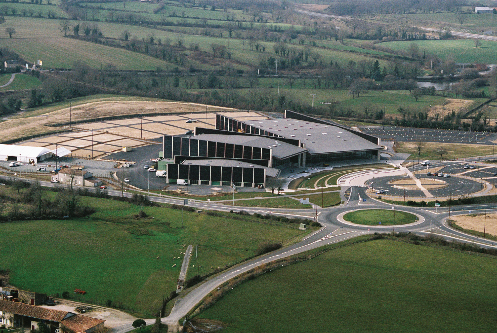
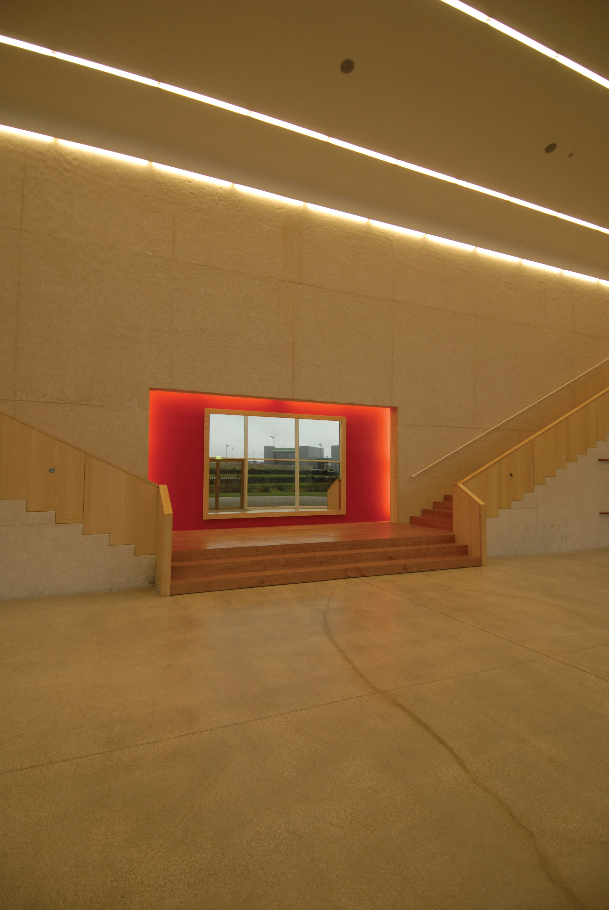
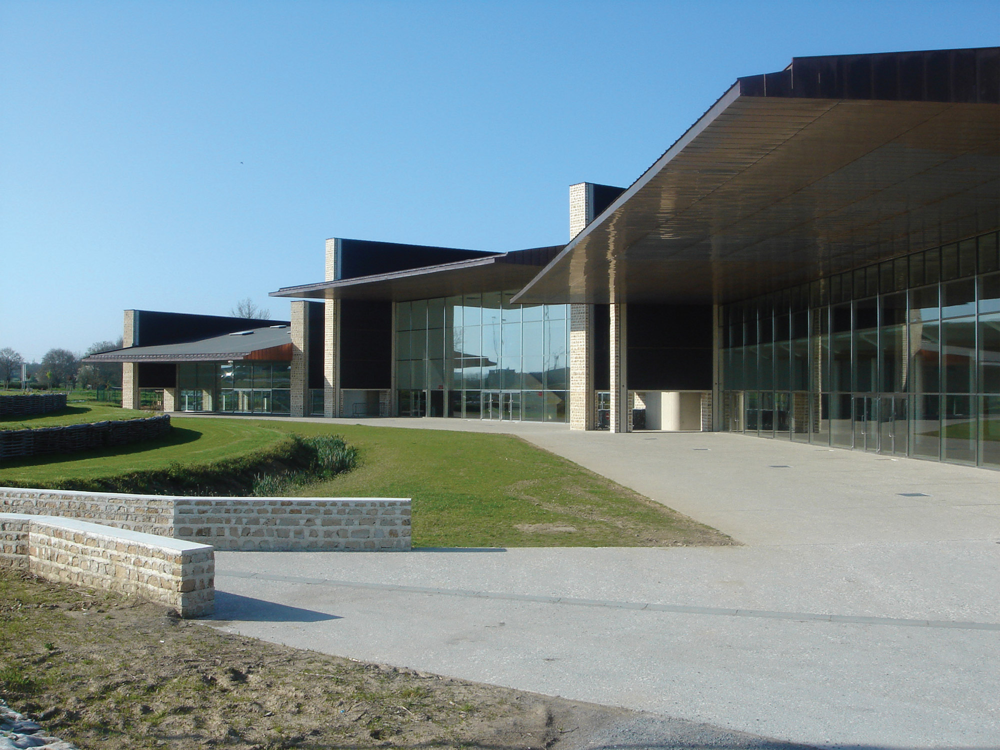

Cet ensemble constitue un élément fort, marquant la “porte de Bressuire”. L’architecture générale est fractionnée. Les volumes majeurs (Salle Polyvalente, Grande Halle et Auditorium) sont autonomes et identifiables avec leurs propres entrées et leur parvis. Les façades principales sont vitrées. Les façades latérales sont pleines en partie haute et percées en partie basse par les sorties de secours logées entre les poteaux. Les poteaux sont en béton de ciment blanc. La partie basse est habillée de pierre. Les façades arrières sont en béton blanc avec incorporation d’agrégats de pierre locale. Le coulage est fait par strates successives. Le parement est sablé pour dégager l’aspect naturel des agrégats.
Quelques chiffres

Places
1400 places
Architectes
Hervé Beaudouin
et
Benoit Engel

Surface
8900 mètres carré

Date
Date de début
2003
Date de fin
2006
Coût
6 992604 M € HT